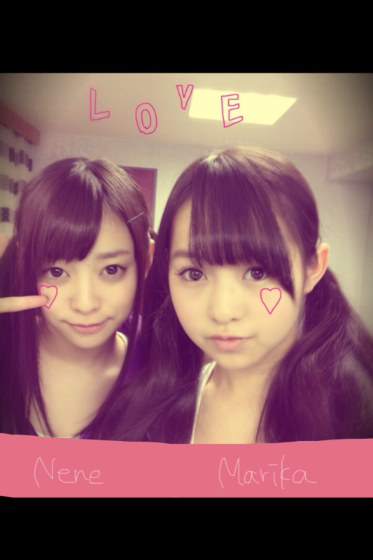
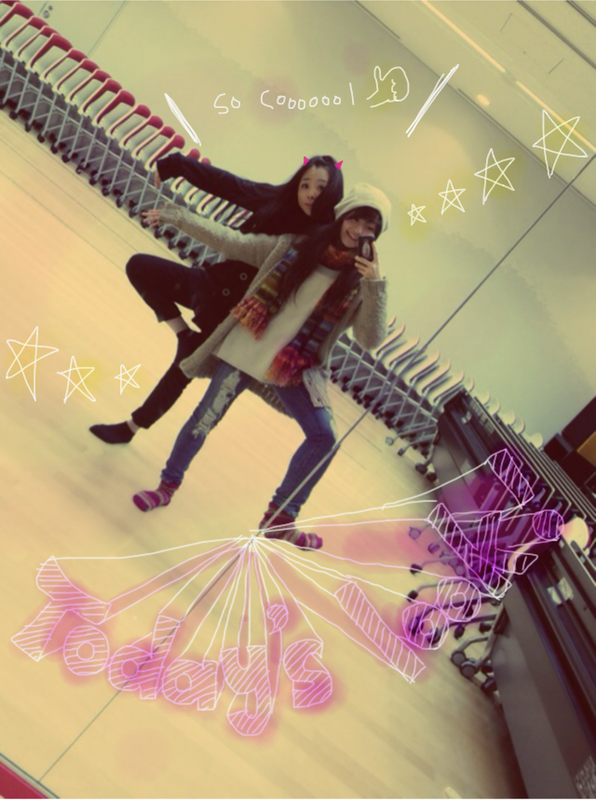
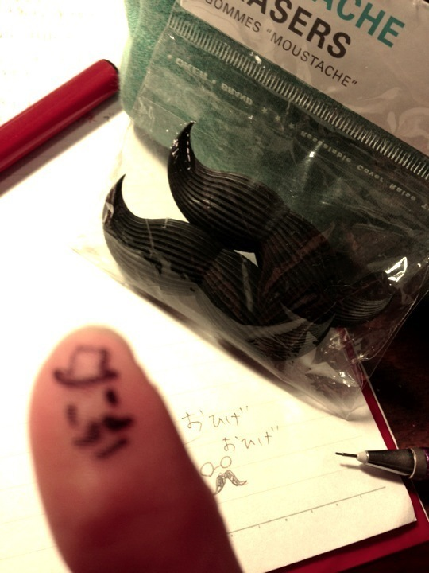
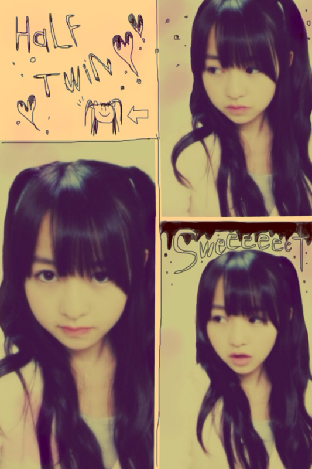
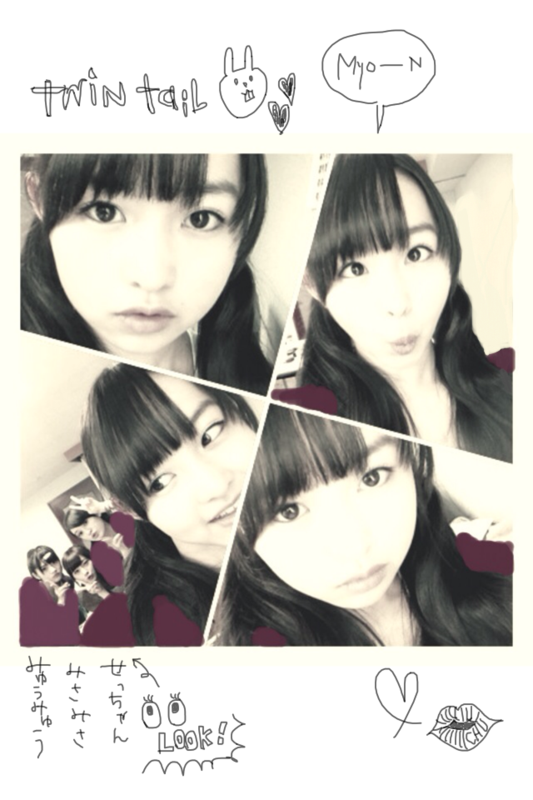
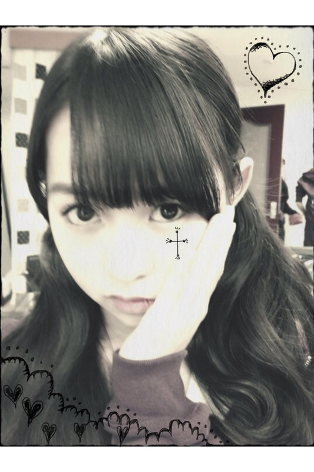
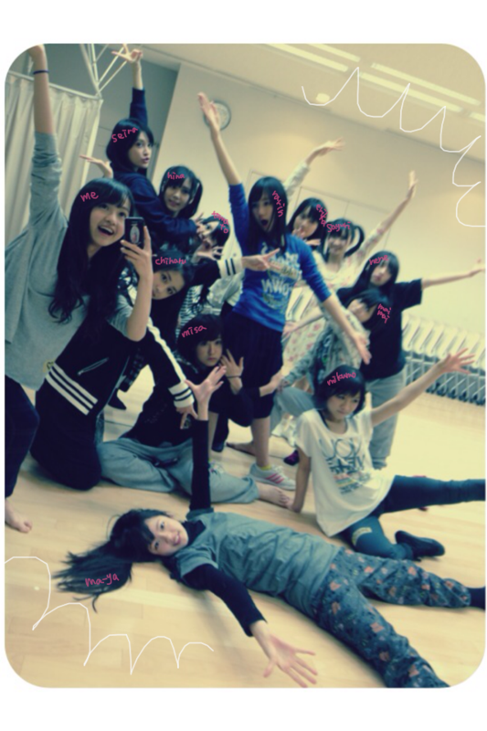
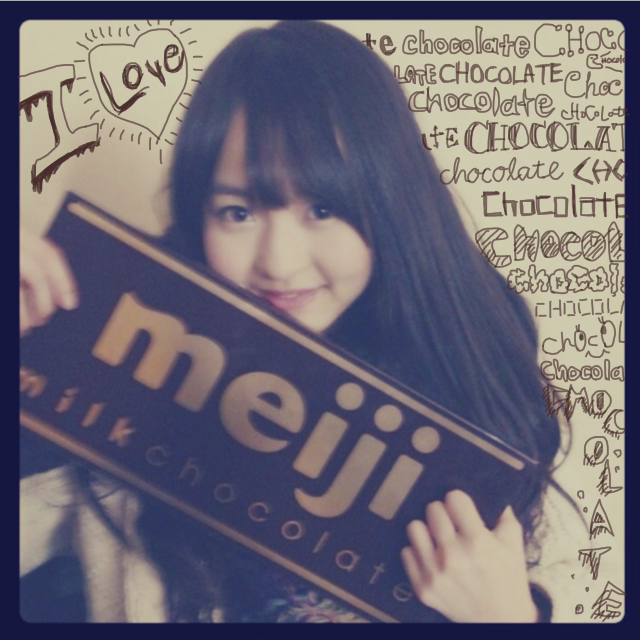

2012/0119Thu54回目*marika
こんばんはまりかよ。
いつも読んでくださってる方、
初めて読んでくださった方、
コメントしてくださった方、
ありがとうございます!!
乃木メンが風邪に苦しんでます.......
うあああぁぁあぁ!!!!!
xO
頑張って治さな><
今日はみんなに心配かけてしまった。
顔まっかだったみたいだけど、
熱は出てないの。
ん〜...こわいな><
あっっっっっ!!!!!
ずっと報告するの忘れてました!!
口内炎が--...
治った!!やっほいびょんびょん
みなさんにコメントで
口内炎の調子を心配してくださってて...;(
やっとニカッと笑える。
歯茎に当たって痛かった
厄介なやつは消えた。
やっほいびょんびょん↑↑
しゃしん＊
はい
ででん！

伊藤ちゃんず。
ねねころのころりんちゃんですがね...
もうね、
かわいすぎてきゅんきゅんしてます♡
ま「最近私の前髪りりしくなってきてない!!?」
ね スパッと「んん。そーでもないね」
なんでこんなあっさりしてるのよ笑
あさりちゃんて呼ぶぞ。ぇ
today's look!
mahiro ＆ marika

この帽子お気に♪
ロングニットカーデはParAvion♡
体調悪かったのに
真洋としゃべったら元気になった^^♡
しゃべるとおんなじ空気になるんよね。
うっふふーてね。笑
真洋のファッションはかっこいい系。
ん、モノトーン似合う☆
*******
カップリングの曲
『会いたかったかもしれない』
.....マイナーロック調でかっこよいです^^
AKB48さんの
『会いたかった』
と雰囲気が全く違っていて
最初はびっくりしました!!
『会いたかった』は
オーディションを受ける前から
友達と踊ってました。♪
実際オーディションでも踊ったので
だいすき♡♡
乃木坂46の
『会いたかったかもしれない』
みなさん、聴いてみてどうでしたか?
何回も聴いたら、はまっちゃうかも:D
*******
質問はまたまとめて返します><
今日もお疲れさまりか＊
風邪なんて気合いで治したる。!
風邪をひいているみなさんも
気合いで治そう。
風邪ひいてない方も
注意してくださいね><
インフルエンザも流行ってるみたいなので...
では!明日も頑張りまりか:)
では!おやすみなさい ☆

LOVE
ベビたん*****bA by marika
2012/0117Tue53回目*marika
ベビです。
まりです。
ひっ久しぶりっ;D!!
いつも読んでくださってる方、
初めて読んでくださった方、
コメントしてくださった方、
ありがとうございます♡
.............................
・行きたい大学とかありますか？
ある...!!
・いつも、ベビたんにはブログとか
イベントで元気だとか、癒しをもらってます
僕はベビたんのために何かして
あげられる事がありますか？
本当にうれしいです><
私もコメント、イベント等で
みなさんから元気をもらっています。
毎日笑顔でいてください^^
もし、辛いことがあったり
寂しかったら、私のBloGを読んでください。
そして機会があれば、沢山話そう!!
それで、もっと元気を与えられるように
もっと癒されるように、私もずーっと
笑顔を忘れません＊
・お年玉は何につかったんですか？
今の所はiphoneケースしか買ってません:)
・スノボとかウィンタースポーツはするの？
昔スキーに行ってました=3
ゆーほど上手くないけどね笑
...ゆーほどできないけどね..←
・クリスマスイベントで
手紙渡したけど読んでくれました？
もちろん読みました!
丁寧に丁寧にお手紙を書いてくださって
めちゃくちゃうれしかったです＊＊
・握手会でも話したけど
ばぶちゃんて呼び続けてもいいよね？
まったくもー仕方ないなぁ。
でも直接言われたら、即ツッコみいれますよ?たぶん笑
・こんな曲を歌ってみたいとかありますか？
マイナーな曲調...?とか♪
なんかほわんほわんした感じとか!!
...イメージわくかな>
・まりちゃんの画像を待ち受けにしたいんだけど…
｢待ち受けにするならこの画像がいい！｣
って画像を貼ってくれませんか？
ええぇ!!私が待ち受けですか!?
よっしゃ、次気合い入れて撮ったる!!!←
・写真いつも自分で
デコってるんですか？可愛いーっ
アプリだったらなんてアプリ？
いやーかわいいだなんて///
イラストとか文字も全部手書きです~^^*うふ
アプリは『スケッチ』がオススメ☆
・自撮りは乃木坂入る前からしてたの？
はずかしいがね。
...何回か撮ってました。
今はちょとコツがつかめたかも...ちって←
＊お手紙から
・もし無人島に行って何か３つ持って行けるとしたら？
水
ナイフ
懐中電灯...
んま、現実的...!!
心配性だからね><
今日はここまでっ。
.............................
「高まりか」
いいですね＊＋。!!きらきら:D
テンション高山もいいし、
テンション高まりかもいいねっ:D!!
そんで
「:^D」
この顔文字...
いっいけめん!!
外国人!!
使わせてもらいます:^)きらん+.°
おひげのケッシー

だいぶ前にかわいい雑貨屋さんで
見つけてしまいました。
「おひげのケッシー」
レトロなおじファッションかわいいよね。
私の中で
おひげグッズがキテル。
もったいない。
このケッシーは飾ってます。
.....そして!!お待たせしました><
ハーフアップツインテール ♡

私にはらぶりーかしら。
＼感想お待ちしてます／
みなさんに質問っ=3
次のヘアーを載せる時も
こうやって一枚に複数の写真を
載せた方が良いですか?
それともいつもみたいに
一枚だけの方がいいかな?
乃木メンでも風邪が流行ってる; ;
あ"ーーー
声がハスキーになってるメンバーが増加中。
実は。
私もまたちょとせきが......><
まだましな方で。
すんぐぉい
乾燥してますね
みなさんも気をつけてねx(
今日もお疲れさまりか＊
明日も一緒に頑張りまりかっ!!
んでは、
カピカピ唇に
大量にリップクリームぬって
マスクして
寝ます!!!!!!
おやすみなさいx□

LOVE
ベビたん*****bA by marika
2012/0115Sun52回目*marika
いつも読んでくださってる方、
初めて読んでくださった方、
コメントしてくださった方、
ありがとうございます!!
ベビたんです:D
..............................
・:D←これから僕も使って良いですか？
ぜひっ☆
はやるかなあ:3るんるん
・動物の中では何がいちばん好き？
ネコ科とは虫類がすき♡♡
ヒョウとトラとワニとトカゲと...←
・今度、握手会でファッションチェック
希望だけどお願いできる？
じゃあチェックしちゃおっかなぁ:)にひ
・デカイ板チョコ持ってるけど、
これは本物のチョコ？
大きくないですよ!
私が小さくなったんです!!
小人になったら
板チョコってこんなおっきいんや
て思いました。
......はいうそです笑
楽屋にあってみんなで食べました:D
中身はしっかりちょっこれいと♪
ですよ~^^
・写メの落書きどうしたら上手く書けますか？
手で描くのって慣れないと難しいです><
でも逆に手で描いてガタガタってなってるの
わざとらしくてかわいいかな?
て思ったります^^*
きれいに描くにはやっぱり慣れることかな...
有料ですけどiphoneならば
『スケッチ』がおすすめです☆
・もし、べびたんがユニット曲貰えるとしたら
何人組で誰と組みたい？
ユニットですか!!
組めたら夢みたいだなぁ。
何人組がいいのかな。
同い年で組むのとか=3
伊藤ちゃんずとか!!笑
今は乃木坂46、33人でじゅうぶんけどね><
・私もファミリーの一員になれるんですか？
逆になってくれるんですか？
そんなの当たり前!!
もちろんです＊
みなさんがいなかったら
今の乃木坂46じゃないです。
・コーヒー飲める!?
...え?
飲めますよ!
コーヒー(ミルク)!!
大人でしょ どやっ←
・コメ書くとき、
マリカってカタカナで書くの、どう思う？
カタカナ見やすいですよね!!
マリカでもいいです^^♡
・オススメ画像アプリおしえて！
画像のアプリですか><
画像を検索するアプリではないんですが
『Instagram』
は、世界中の人が画像を加工して投稿したのを
見ることができるアプリです。
オシャレに加工しててすごい参考になります♡
・:o ←これ赤ちゃんみたいで可愛いから
よく使うんですけど（笑）
これからも使っていいですか？？
かわいいですよね~:D!!
ぜひ使ってください:o♡
..............................
自撮りの数々...


この前の撮影で、
ゆる巻きツインテールにしてもらたああぁぁあ!!!
ずっとおろしてたから
テンション高山やったあぁ
みんなより私は耳の下あたりで
結んでもらったんやけど..
似合ってるかしら^^/てれてれ
みんなで撮影やったんやけど
朝から夜まですっっっごい大変だったよね。
でも本当に
スタッフさん
メンバー
全員で頑張った!!!!
本当にお疲れさまでした*
お仕事、学校、...
そして、試験。
美雲も忙しい中、
お疲れさま*
いとこのお姉ちゃんもお疲れさまです。
高１の私が言うのもですが
頑張ったら絶対に大丈夫です。
努力をしただけ
返ってくると思います。
今日は私はoffでした。
ゆっくり休みました*
選抜のみんなお疲れさま♡
昨日もハードだったけど...
お疲れさまでした><
明日も一緒にがんばろーーーう:)!!

LOVE
ベビたん*****bA by marika
2012/0114Sat51回目*marika
まりかです
まりりんです
まりたんです
まりちゃんです
ベビたんです
気づけば、51回目*
いつも読んでくださってる方、
初めて読んでくださった方、
コメントしてくださった方、
ありがとうございます♪
なんか久しぶりに更新した気がする><
さぁ!まりかの時間だよ=3←

めっちゃ楽しそうでしょ~^^うっふ-
Lesson前に
「みんなこっち向いてポーズとって!」
てゆったら、笑。
ノリいいなあ。
乃木メンはみーーーんな
かっわいくて
やっさしくて
おもっしろくて
だいだいだいだいすきなんです♡
もちろん、みなさんも
だいだいだいだいすきー ♡♡
ファミリーだねっ!
みなさん
スタッフさん
メンバー
みんなの家族
乃木坂ファミリーだ☆
........................
・ひょっとして、留学とかしたことあるの？
海外は割とたくさん行ってる方？
いやいやいやっ!!
海外.....ちっちゃい頃に
グアムに行った記憶が...
全然ないですよ〜
・iPhoneのカバーよかったらどこのか教えて！
atomosっていうショップに
ありました。
でもこれはCRIMIEというブランドのカバーです。
このイラストかわいい!!
て即決で即買いしました。
シールなんです^^*
頑張って買いました=3
・部屋のコーディネートって
なんか雑誌参考にしてる？
してたらその雑誌教えて欲しい！
:アシェット婦人画報社
: 主婦の友社
のパリのシリーズ本!!
とか
モロッコ、メキシコとかの本
インテリア本を参考にしてます:D♡
・襟付きのどこで買ったの？
『bulle de savon』
というブランドで^^
セールでした☆
・自分を動物に例えるなら何？
なんだろ。
昔はリスに似てるって言われてました＊
今は...何に似てるんかな!?
・iphoneのカバー何の柄？
マリア様のイラストです♡
色合いがきれいなんです:)
・どこか海外には行ったことある？
グアムに1回だけ><
・『乃木坂って どこ？』司会の
バナナマン、設楽さんと日村さん。
このお二方はベビたんから見てどんな印象？
ＴＶで見たのとそのままだな
と思いました!!
とっっても優しくてとっってもおもしろいです^^
・名古屋は好きですか？(笑)
休みの日に車で大阪に帰るときに通るけど
名古屋行ったことないんです;(
手羽先めっちゃおいしいですよね♡
はまった♪
行っておいしいものいっぱい食べたいな*
・｢♪まめちょこω♪｣
このニックネームどうですか？(笑)
かわいいですよ♪
なんか..麦チョコ食べたくなるっ♡←
・メキシコに行きたい理由は？
雑貨、インテリアがめちゃくちゃかわいいから♡
街もカラフルらしいですxD!!
・プライベートではストレート？
それともやや巻いてるの？
ほとんど何もいじらないから
ストレート...かなぁ。
う〜ん、でもちょとクセ毛なんです;(
すんご--くゆるいS字になる笑
まぁ、それも無造作ですきかな♪
・べびたんのAKBのライバルはだれ？
AKB48さん全員ライバルです!!
・オシャレになるにはどうすればいいかな？
そんなに参考になるようなことは言えませんが
おもいきって好きなものを
着るのがいいと思います><
普段の服装に、明るい色の小物とか
身につけるだけでオシャレになると思います!
小物といっても、靴下でも、靴でも:D
少し変えるだけで見た目が変わると思います＊
・口内炎は良くなった？
みなさんご心配をおかけしてます><
フルーツを食べたら
うぁぁあぁ
てしみるんですよ。
(特にグレープフルーツとパイナップル)
こりゃあ痛いです。
くすり飲もう...
今日はここまでっ
........................
乃木坂46デビュー曲
ついに…‼
『ぐるぐるカーテン』
みなさんは聴きましたか⁇
女の子どうしの秘密の曲♪
とってもかわいらしい曲です。
おもわず、口ずさんじゃうね^^*
乃木坂46が本格的に動き始めました。
♪♫~♩
ふっふふーふ
ふっふふーふ
ふふふふふーふふ、ふ、ふ。
ちょっこれいと
ちょっこれいと
ちょこれいとーはめ、い、じ。
ちょっこれいと
ちょっこれいと

ちょこれいとーはめ・い・じ♪
チョコレート昔からだいすき♡♡
ここでチョコの話＊
私はチョコの中でも
ビターチョコが特にすきです。
えっ？大人っぽい？？
えっへへへ←
みなさんはチョコ。
ミルクかビターかホワイトかハイミルクか
どれが一番すきですか^^***
みんなお疲れさまりか ☆
今日も元気に頑張りまりか ☆☆
風邪ひかないようにしよ---うっ:)
LOVE

ベビたん*****bA by marika
2012/0112Thu50回目*marika
{kind=link}
{kind=link}
＼やぁやぁ／
ベビたんです。
いつも読んでくださってる方、
初めて読んでくださった方、
コメントしてくださった方、
ありがとうございます♡
.......................
・今一番行きたいところはどこ？
メキシコ行きたぁぁぁい‼♡
・前髪今度切るの？
伸びたら切ります^^*
でも、短い前髪したいなあ。
今できないけど><
・どんなファッションが好きなのかな。
雑誌で言うと何系？
ゆるいロック…**
みたいなの…わかるかな:)⁇
足下はゴツい靴。
雑誌でいうと、mini、JILLEとか
ストリートカジュアルに当てはまるかも♪
ちなみによく読むのは、↑と
装苑、FUDGE、FUDGEsis
です♡
・お兄ちゃんになっていいですか？(笑)
なってなって:D♡‼
でもね。
こんなのが妹だったら大変よ><笑
・あいさつの言葉の後にいつも付いてる
「：D」ってなんの略？どこかで説明してたっけ？
「:D」わからなかったか><
これね、よく見て‼
横から見たら、顔になってるの。
わかりますか☆
これアメリカとかで
使ってる顔文字なんです‼
日本の(^-^)と一緒。
「:D」の他に「:)」「;(」「xD」とかも
使ってます:)にこにこ
・小5時代のショートヘア、今よりも幼いんだよね？あまり変わってない？
そりゃね。
小5だから、今よか幼いですよ！笑
写真あるか探してみます=3
・「レディたん」ってのはあり？笑
「たん」が付くとどしても
かわいくなっちゃうね‼笑
レディたん…は違うかなx(
・デビューシングルCDの個別握手会の応募が始まったのは知ってる？
もちろん♪♪
楽しみや～:D きらきらわくわく
・ばぶちゃんは温泉は好き？
長風呂派？何回も派？
ばぶちゃん‼
てなんでやねん！←
はい。温泉すきです＊
なかなか行く機会がないけどね。
あっ、でもこの前みさみさたちと
温泉入ったんだった‼笑
長風呂派。
昨日疲れてお風呂の中で
30分寝てしまった笑
・森ガール画像はー？笑
みなさん、待ってますよね><;
言っときながら
全然載せてなくてすみません~泣
ヘアアレンジの時と一緒に時間あれば載せます‼
・コスプレ、絶対似合うよ。
ロリータも、絶対似合う！
一度なりきってみてはいかが？
コスプレ⁉
何系が似合うかな…
ロリータは、普段着れないけど
一回着てみたかったりします**えへ
着れる機会があれば！笑
.......................
今日のしゃっし～ん！♪
1枚目は、友達にもらった北海道のお土産。
「まりかに似てるグミあるからあげる～」
てゆわれて、何かなって思って袋開けたら
こんなかわいらしい
マリモグミちゃんでした。
…似てるかしらね。
この子絶対赤ちゃんよね笑
でもこのグミちゃんのお腹に
「幸せ」っていう言葉…
きゅん♡←
食べるのもったいないなあ。
ありがとうね^^♡
2枚目。
iPhoneのカバーをおNEwにしたのと、
この襟付きのインナーもひとめぼれして買ったのさ*いひ
この襟はなかなかないと思いました。
もっとUPにすればよかた。
でね！撮ってたらまあやが笑
まあや、しゃべり方かわいい♡
スタイルめっちゃいいのうらやまっ‼
今日も朝早くみんなお仕事です。
Lessonも頑張ってきます***
今日はすっごい冷え込んで
さっむいむいですねx(
ヒートテックに薄いニットきて
その上にインナー着て、
ニット着てるのにまださむいむい～泣
これ以上私は何枚着ればいいんだあぁぁ‼‼
※着ぶくれ注意。
では、また更新します=3
みなさん、
出かけるときはあったかくしてね＊＊
ベビたん*****bA by marika